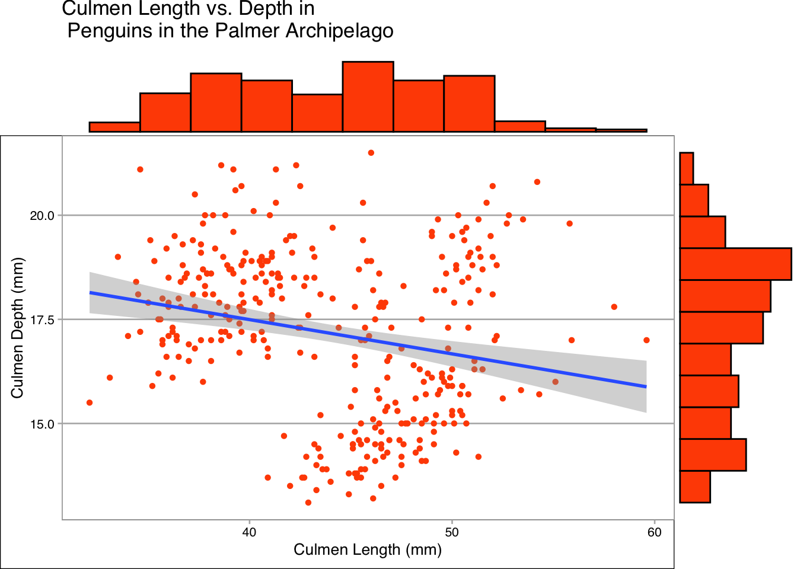

library(dplyr)
library(ggplot2)
library(ggthemes)
library(ggExtra)
# Import the penguins dataset using the read.csv() function, built into R
penguins <- read.csv("penguins_size.csv")Scattering Penguins
ggplot2
R
data visualisation
penguin tutorial
An introduction to scatter plots in ggplot2.
This post follows directly on from my last, “How Many Penguins? A First Look at Visualising Data With R and ggplot2”, so if you are new to ggplot2 check that one out first!
Today we are going to be continuing looking at the Palmer Archipelago dataset, this time for creating scatter plots.
As before the dataset being used can be downloaded directly (in csv format) from Kaggle or imported directly into R with the palmerpenguins package.

Importing the Data
As previously we will be needing the ggthemes and ggplot2 packages. To show off a few themes we’ll use a different one for each plot. This time we will also be using the dplyr package for data manipulation and the ggExtra package which we will be using to plot distributions on plots.
Firstly we import the data with read.csv.
Next we convert the ‘species’, ‘island’ and ‘sex’ variables to factors, this will be a requirement for some of our plots and is generally good practice for factor variables. This is done with lapply, click here for more on this.
# Convert species, island and sec to factor variables
penguins[c('species', 'island', 'sex')] <- lapply(penguins[c('species', 'island', 'sex')], as.factor)Our final statement is quite a large one and shows off some of the power of pipes in R. In R |> is a pipe, which can be read as “then”. So the statement penguins <- penguins |> na.omit() |> rename('Island' = 'island', 'Species' = 'species', 'Sex' = 'sex') |> filter(!(Sex == ".")) is saying to take the penguins dataframe, then remove any NA values, then rename ‘island’, ‘species’ and ‘sex’ columns to their capitalised variants then filter the dataframe to remove any rows where the sex of the penguin is recorded as ‘.’ and finally to assign the resulting dataframe to the penguins variable. The use of pipes allows us to perform all of these operations in a single line of code, rather than several.
# Omit NA values from the dataset, rename 'island', 'species' and 'sex' to be capitalised and remove any penguins with a sex of '.'.
penguins <- penguins |> na.omit() |> rename('Island' = 'island', 'Species' = 'species', 'Sex' = 'sex') |> filter(!(Sex == "."))Simple Scatter
To create a basic scatter plot we can use geom_point(), as shown below. As previously we pass the penguins dataframe into the ggplot() function with a pipe, set the aes values to be culmen length and culmen depth of the penguins and finally add the plot.
penguins |>
ggplot(aes(x = culmen_length_mm, y = culmen_depth_mm))+
geom_point()
Making Improvements
We can improve this plot by adding labels, a little colour and using a theme. My usual go to theme is theme_hc() from ggthemes so we’ll start with this one.
penguins |>
ggplot(aes(x = culmen_length_mm, y = culmen_depth_mm))+
geom_point(shape = 16, colour = "#FF4F00")+
labs(x = "Culmen Length (mm)", y = "Culmen Depth (mm)", title = "Culmen Length vs. Depth in \n Penguins in the Palmer Archipelago") +
theme_hc() +
geom_rangeframe()
Looking at our plot it is clear that there appear to be some distinct clusters in the plot, at least two. We have three species of penguins in the dataset, three different islands and two sexes which could all be potential reasons for this clustering. Later we will graphically look at what these clusters may be.
Before that, however, it is important to look at how to add a line of best fit to the scatter plot. This is incredibly easy with R and we even get built in confidence intervals for free! The line of best fit is created with geom_smooth(method="lm") where “lm” stands for linear model.
Looking at the plot we can see that a linear model is not a great fit for our data at the moment.
penguins |>
ggplot(aes(x = culmen_length_mm, y = culmen_depth_mm))+
geom_point(shape = 16, colour = "#FF4F00")+
labs(x = "Culmen Length (mm)", y = "Culmen Depth (mm)", title = "Culmen Length vs. Depth in \n Penguins in the Palmer Archipelago") +
geom_smooth(method="lm")+
theme_economist_white()+
geom_rangeframe()
print(cor(penguins$culmen_depth_mm, penguins$culmen_length_mm))[1] -0.2286256Marginal Plots
We can further improve our plot by adding marginal plots, with ggMarginal from the ggExtra package. These plots help us see the distribution of the data. We could make these plots separately but it can be nice to have this information in the same place as our main plot.
We do this as below, unlike before we know need to assign our plot to a variable and then call ggMarginal on our plot. This is to reduce code repetition when showing off each type of marginal plot available.
plot <- penguins |>
ggplot(aes(x = culmen_length_mm, y = culmen_depth_mm))+
geom_point(shape = 16, colour = "#FF4F00")+
labs(x = "Culmen Length (mm)", y = "Culmen Depth (mm)", title = "Culmen Length vs. Depth in \n Penguins in the Palmer Archipelago") +
geom_smooth(method="lm")+
theme_calc()
ggMarginal(plot, type="histogram", fill = "#FF4F00", size=5, bins = 12)
ggMarginal(plot, type="boxplot", fill = "#FF4F00", size=15)ggMarginal(plot, type="density", fill = "#FF4F00", size=10)For this data in particular I think the boxplot and density plots show the most information. One advantage of creating box plots like this is that it removes a usual downside of the plot, a loss of information about the actual distribution of the data.
Investigating Clustering
Our previous plots were fine but they do little to explain the clusters of data in the graph. To investigate this we can add the parameter colour = Species to aes.
penguins |>
ggplot(aes(x = culmen_length_mm, y = culmen_depth_mm, colour = Species))+
geom_point(shape = 16)+
labs(x = "Culmen Length (mm)", y = "Culmen Depth (mm)", title = "Culmen Length vs. Depth \n in Penguins in the Palmer Archipelago by Species") +
geom_smooth(method="lm")+
scale_fill_few()+
theme_few()
We see three distinct clusters based on species of penguin, with very little overlap. Graphically we can see that three linear models for this data appears to be doing a better job than one. We can put some numbers to this by looking at the correlation between culmen length and depth for each species of penguin.
# Investigate the correlation for each species
correlation <- penguins %>%
group_by(Species) %>%
summarise(correlation = cor(culmen_length_mm, culmen_depth_mm))
print(correlation)# A tibble: 3 × 2
Species correlation
<fct> <dbl>
1 Adelie 0.386
2 Chinstrap 0.654
3 Gentoo 0.654The closer the magnitude of the correlation is to 1.0, the stronger the correlation. For Adelie penguins the correlation is weak and positive, at 0.4. For Chinstrap and Gentoo penguins the correlation is stronger, 0.65 for both. This would suggest that a linear model such as the one plotted would work well for Chinstrap and Gentoo penguins, which matches our intuition when looking at the distribution of data for each species.
Rather than species we might also want to consider Island!
penguins |>
ggplot(aes(x = culmen_length_mm, y = culmen_depth_mm, colour = Island))+
geom_point(shape = 16)+
labs(x = "Culmen Length (mm)", y = "Culmen Depth (mm)", title = "Culmen Length vs. Depth by Island \n in Penguins in the Palmer Archipelago") +
geom_smooth(method="lm")+
scale_fill_few()+
theme_foundation()
correlation <- penguins %>%
group_by(Island) %>%
summarise(correlation = cor(culmen_length_mm, culmen_depth_mm))
print(correlation)# A tibble: 3 × 2
Island correlation
<fct> <dbl>
1 Biscoe -0.445
2 Dream 0.365
3 Torgersen 0.216This seems to have been less successful than splitting the data by species. There is clearly some separation but this is far less distinct. Correlation is also generally weaker.
There’s nothing stopping us considering multiple factors on the same graph! One way to do this is to use the shape attribute i.e. change the shape of the point for each species. R will even create new lines of best fit for us for each combination! Sex is an obvious choice to do this with as we would reasonably expect differences between penguin sexes but not necessarily between the same species in different locations (although factors such as nutrition could make this the case).
Looking at sex alone there is a clear difference in our lines of best fit. Correlation appears to be similar between the sexes however both culmen length and depth seem to trend larger in male penguins.
penguins |>
ggplot(aes(x = culmen_length_mm, y = culmen_depth_mm, colour = Sex))+
geom_point()+
labs(x = "Culmen Length (mm)", y = "Culmen Depth (mm)", title = "Culmen Length vs. Depth by Sex \n in Penguins in the Palmer Archipelago") +
geom_smooth(method="lm")+
scale_fill_few()+
theme_solarized()
correlation <- penguins %>%
group_by(Sex) %>%
summarise(correlation = cor(culmen_length_mm, culmen_depth_mm))
print(correlation)# A tibble: 2 × 2
Sex correlation
<fct> <dbl>
1 FEMALE -0.426
2 MALE -0.395Now let’s consider sex and species!
penguins |>
ggplot(aes(x = culmen_length_mm, y = culmen_depth_mm, colour = Sex, shape=Species))+
geom_point()+
labs(x = "Culmen Length (mm)", y = "Culmen Depth (mm)", title = "Culmen Length vs. Depth by Sex and Species \n in Penguins in the Palmer Archipelago") +
geom_smooth(method="lm")+
scale_fill_few()+
theme_excel_new()
A similar patterns seems to emerge for each species by sex, however there is some slight strangeness. The linear model for male chinstrap penguins makes it appear like their culmen length increases at a greater rate with culmen depth than for female chinstrap penguins. This may be the case, but it may not. I think this highlights a key issue with splitting up data like this, as the size of the dataset you are working with decreases any attempt to make predictions with it become inherently less reliable.
Facet Plots
Whilst graphs like this can be useful they are a little bit visually busy, we will finish by looking at a different way to see multiple plots in one place, with a facet.
For this particular set of data we need only add the facet_grid function as shown.
ggplot(penguins, aes(x=culmen_length_mm, y = culmen_depth_mm, colour = Species))+
geom_point()+
geom_smooth(method="lm")+
facet_grid(Island~Species, # facet_grid showing Island on the y axis and Species on the x axis
scales="free",
space="free_x") +
labs(x="Culmen Length (mm)",
y="Culmen Depth (mm)",
title="Culmen Length vs Depth by Species and Island for Penguins in the Palmer Archipelago")+
theme_base()We can also do this for sex and species.
ggplot(penguins, aes(x=culmen_length_mm, y = culmen_depth_mm, colour = Sex))+
geom_point()+
geom_smooth(method="lm")+
facet_grid(Sex~Species, # facet_grid showing Sex on the y axis and Species on the x axis
scales="free",
space="free_x") +
labs(x="",
y="Penguin Count",
title="Culmen Length vs Depth by Species and Sex for Penguins in the Palmer Archipelago")+
theme_stata()Or even just species if you would rather the data not be all on one plot.
ggplot(penguins, aes(x=culmen_length_mm, y = culmen_depth_mm, colour = Sex))+
geom_point()+
geom_smooth(method="lm")+
facet_grid(~Species, # facet_grid showing Sex on the y axis and Species on the x axis
scales="free",
space="free_x") +
labs(x="",
y="Penguin Count",
title="Culmen Length vs Depth by Species for Penguins in the Palmer Archipelago")+
theme_bw()We need to be very careful here however as if you were not paying attention it might not be obvious that this plot has three distinct x axes.
We could make this same plot the other way around too. Notice that this time we need to write Species~.
ggplot(penguins, aes(x=culmen_length_mm, y = culmen_depth_mm, colour = Sex))+
geom_point()+
geom_smooth(method="lm")+
facet_grid(Species~., # facet_grid showing Sex on the y axis and Species on the x axis
scales="free",
space="free_x") +
labs(x="",
y="Penguin Count",
title="Culmen Length vs Depth by Species for Penguins in the Palmer Archipelago")+
theme_dark()Conclusion
I hope that this post has been a useful introduction to scatter plots with ggplot2. Why not try investigating the relationships between some of the other numeric variables for this data such as body mass or flipper_length? You could even try investigating three numerical variables at once using bubble plots!